有些archive.org上的電子書不能直接下載，只能用"借"的，而且還有借閱人數跟借閱時間的限制（真是莫名其妙，完全背電子書之道而馳），這些借閱的電子書PDF檔都會有DRM的保護，本文討論如何破解。
- 在archive.org找到要借的電子書，如果已經被借走，那就要預約排隊。可以借閱後要選擇借閱14天，只借1小時的話不能下載。
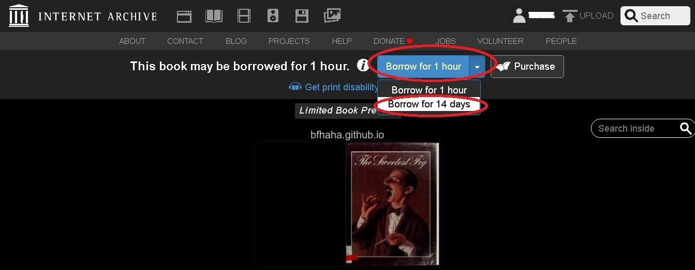
- 借閱後選擇下載。
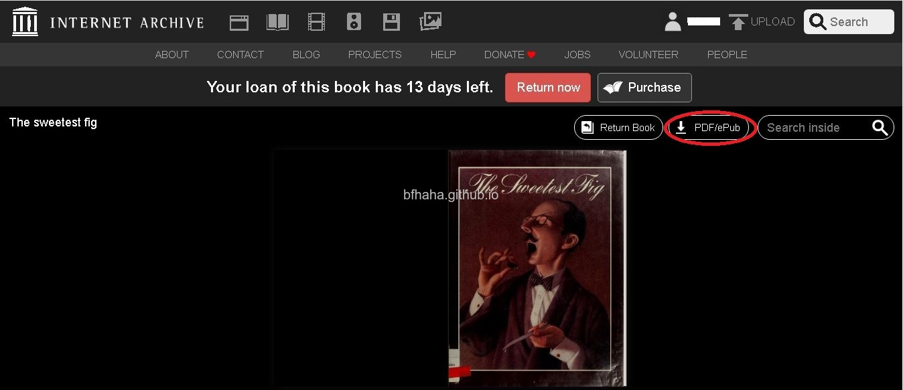
- 如果還沒安裝Adobe Digital Edition（以下簡稱ADE）的話先安裝，或是直接到官方網站下載安裝。
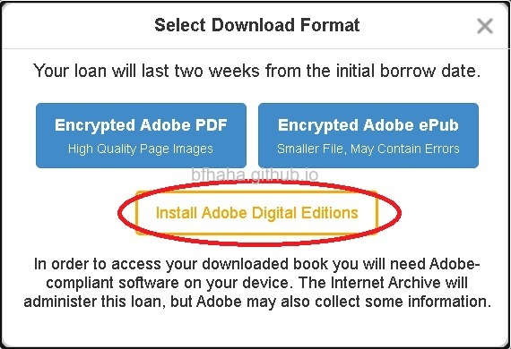
- 安裝完後下載借閱的電子書。
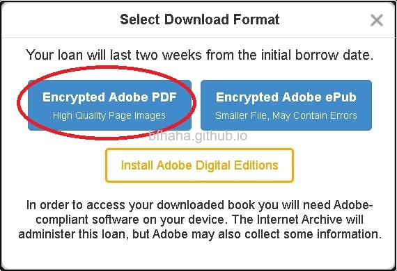
- 會得到一個副檔名是acsm的檔案，例如URLLink.acsm。
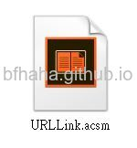
- 直接開啟該檔案URLLink.acsm，預設會用ADE開啟。
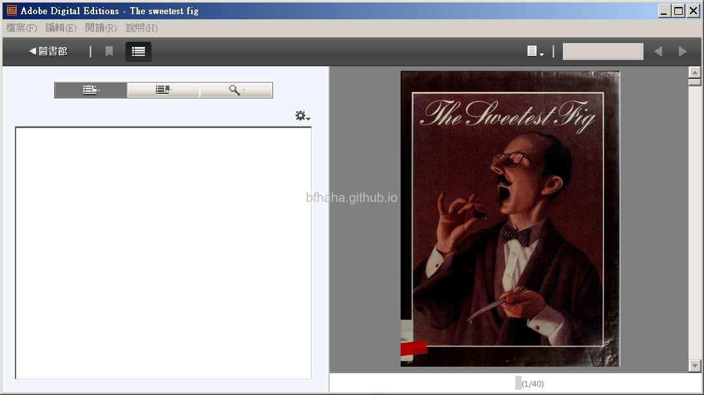
- ADE會再另外下載一份電子書的原始PDF檔，例如ebook.pdf，通常會下載到[我的文件]中的一個[My Digital Editions]資料夾，但這個PDF檔有加上DRM保護，所以無法直接用Adobe Acrobat開啟。
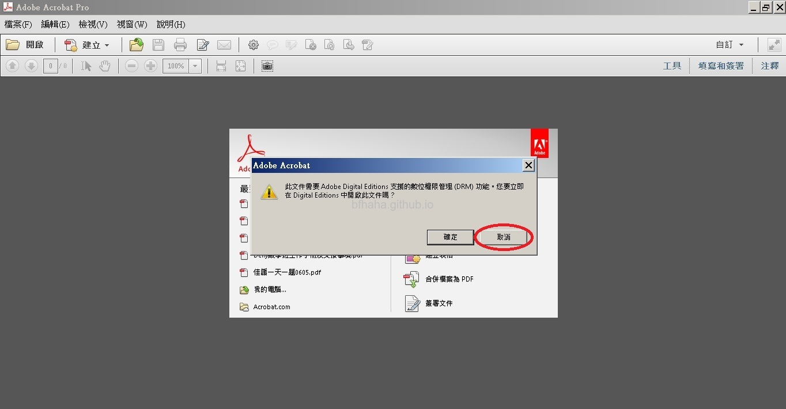
- 下載Calibre這個電子書閱讀暨管理軟體，不常用的話下載免安裝版(Portable)就好。這個portable是一個自解壓縮檔，執行後選擇要放解壓縮檔案的地方即可。
- 接著下載Calibre DRM Removal Plugins，是一個壓縮檔，不要解壓縮。
- 執行Calibre，如果是用portable版，就到剛剛解壓縮的地方執行calibre-portable.exe
- 第一次執行會要你選擇語言，為了能夠配合等下安裝plugin的教學，我們選擇英文。
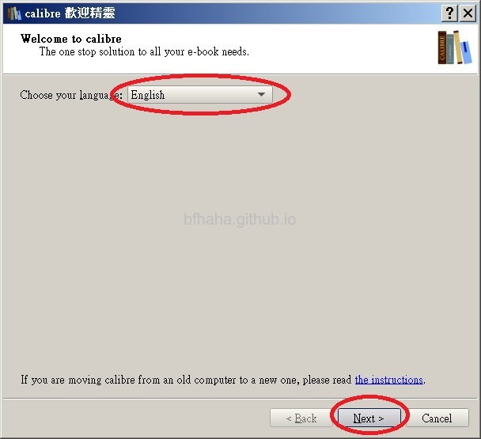
- 接著會要你選擇你看ebook的裝置，這隨便選就好。
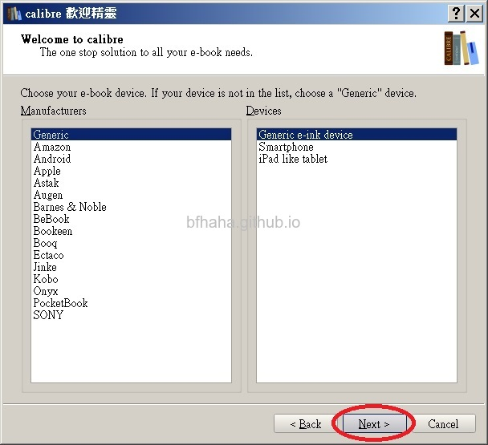
- 按照網頁指示安裝plugin
- 選擇Preferences，
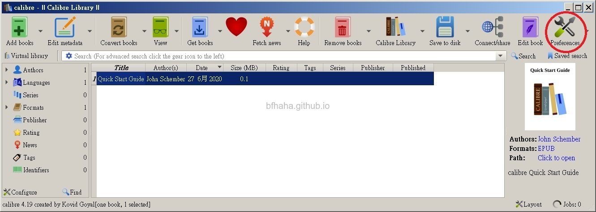
- 往下拉到Plugins，
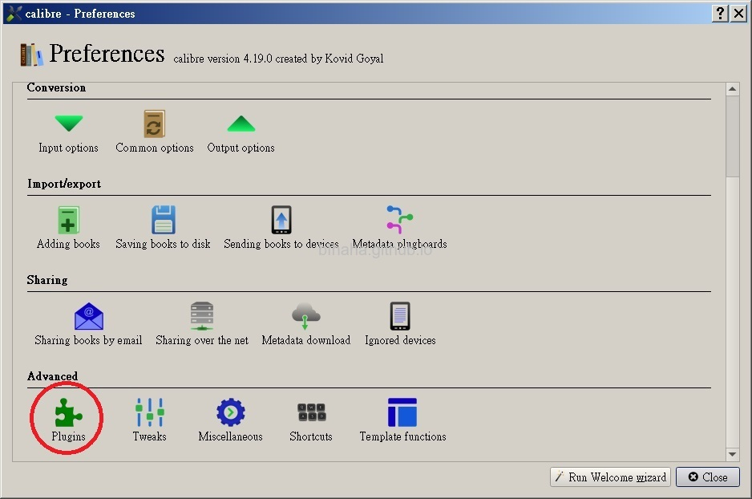
- 選擇Load plugin from file，
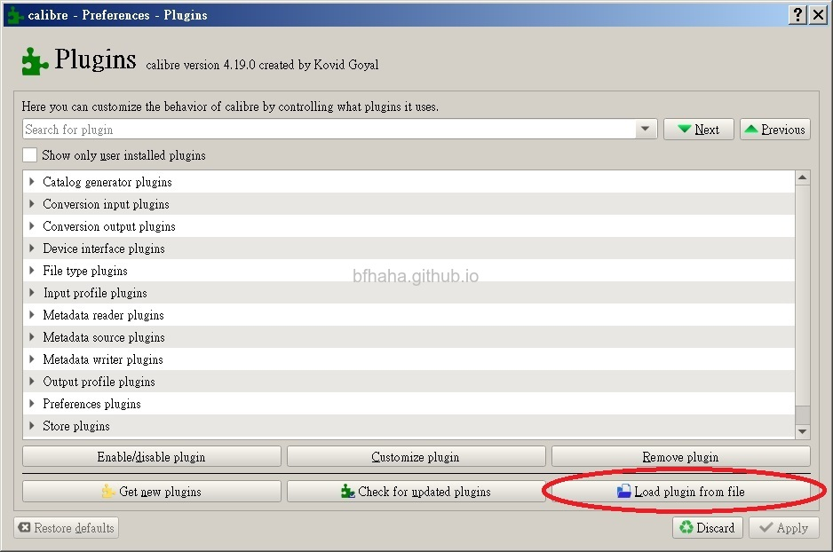
- 選擇剛剛下載的DeDRM_plugin.zip。
- 病毒警告，今天這個社會，什麼東西沒有毒？
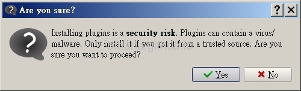
- 安裝完成。
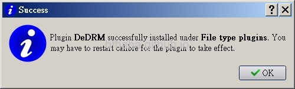
- 按下Apply讓設定生效。
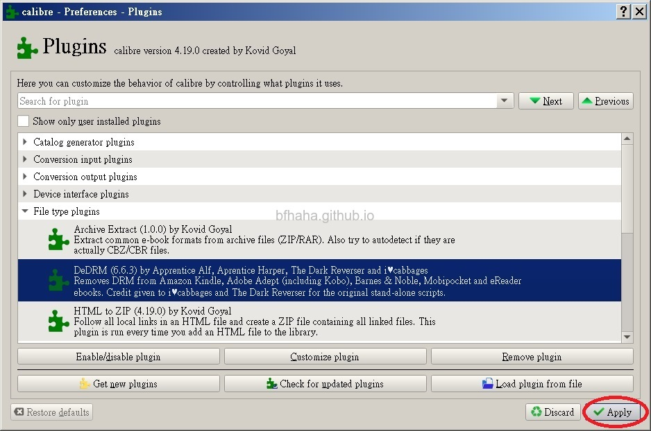
- 關閉剛剛的Preferences。
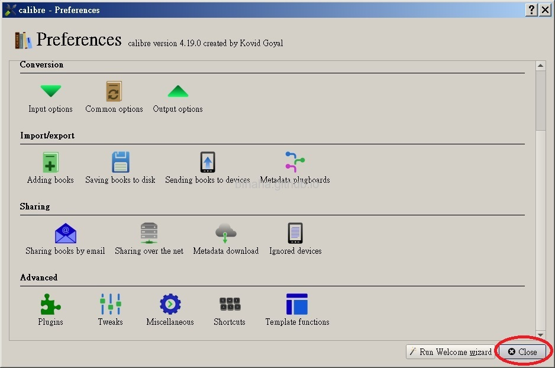
- 這時候在Calibre，按[Add books]讀入加入DRM保護的PDF檔，注意，是讀取ebook.pdf，不是讀取URLLink.acsm。如果成功加入清單，而且點兩下可以用Adobe Acrobat開啟，就表示已移除DRM保護。
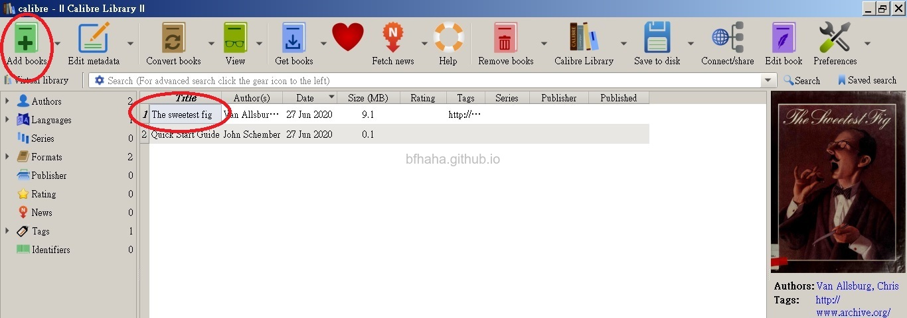
- 在該本書上按右鍵將其另存新檔，通常會以這本書的相關資訊，例如作者名，自動建立資料夾儲存。
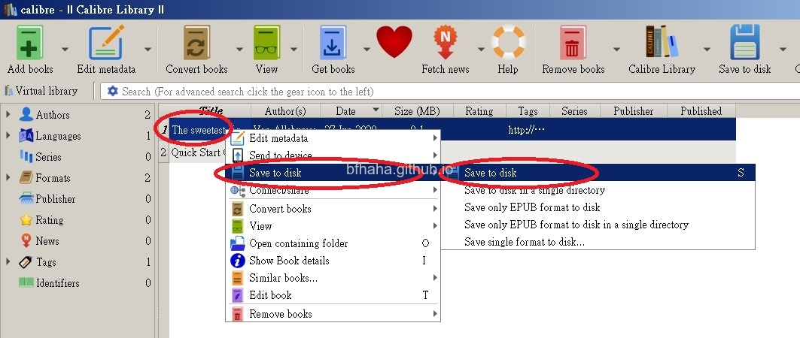